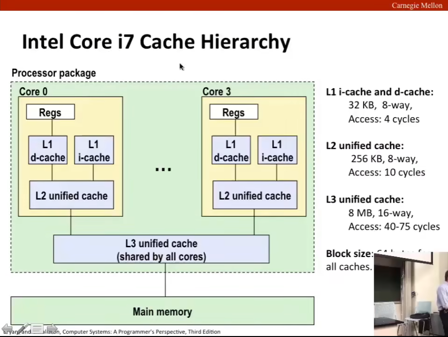
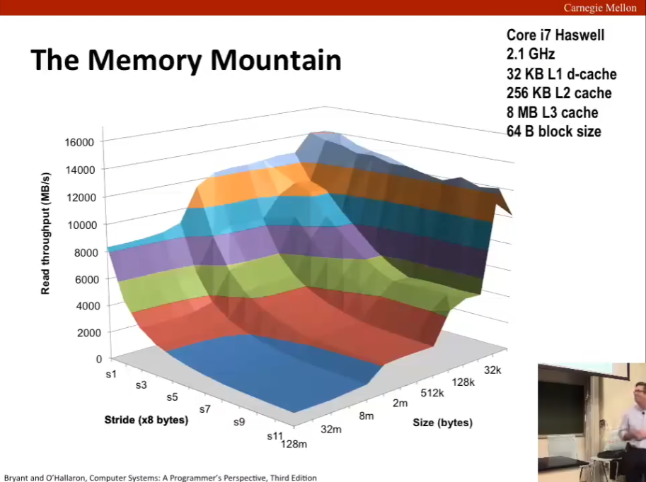
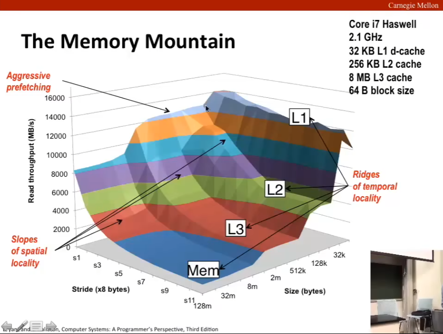
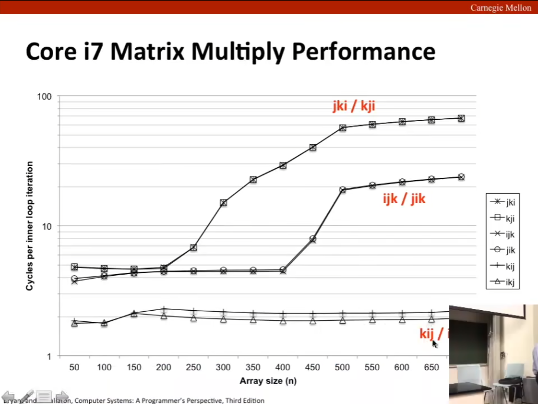

L12 Cache Memories
Source: https://www.bilibili.com/video/BV1iW411d7hd?p=12
Today
缓存结构及其操作 Cache organization and operation
缓存对表现的重大影响 Performance impact of caches
存储器山 The memory mountain
重排循环以提升空间局部性 Rearranging loops to improve spatial locality
使用分块技巧以提升时间局部性 Using blocking to improve temporal locality
Cache memories（高速缓存存储器）
cache memories are small, fast SRAM-based memories managed automatically in hardware.
Hold frequently accessed blocks of main memory.
CPU looks first for data in cache.
Typical system structure: CPU chip <-> I/O bridge <-> Main memory
通用的缓存结构 General Cache Organization (S, E, B)
E = 2^e lines per set（行）
--------------|--------------
/ \
------------------------------- \
| | | | | | | |
------------------------------- |
| | | | | | | |
------------------------------- |
| | | | | | | S = 2^s sets（组）
------------------------------- |
| | | | | | | |
------------------------------- |
| | | | | | | |
------------------------------- /
高速缓存存储器完全由硬件管理，因为我们要高校地查找，所以我们必须以非常严格且简单地方式去组织高速缓存存储器。
我们从这个结构图可以看出来，每个缓存含有 S 个组，每个组内有 E 行，每一行由一个 B = 2^b 字节的数据块组成，另外存在一个有效位（valid bit），指示这些数据位和数据块实际上是存在的；另外可能还存在标签位（tag bits）用于指示缓存查找。
缓存大小 C 是块中包含的数据字节数，显然 C = S * E * B.
Cache Read
对于一串地址，在 x86-64 中是 64 位，其被划分为 t + s + b 位（从高到低），其中 t 位 tag、s 位 set index、b 位 block offset.
E = 1 的高速缓存称为直接映射高速缓存（direct mapped cache）
首先，提取 s 位 set index，找到对应组。
其次，检查 t 位标签位，查看是否有匹配的行，当然有效位应指示存在；否则称未命中，做一些操作。
最后，根据 b 位找到对应字节。
此处未命中需要做这样的操作：从内存中读取值，修改该行有效位（valid bit）为 1，并覆盖该行 tag 的值。
If tag doesn't match: 旧行被撤除并被替换 old line is evicted and replaced.
换句话说，每一行管内存一部分，tag 构成对其中一部分中数据的散列（hashing），因为此时 E = 1，所以无论是 tag 未匹配，还是匹配但 v = 0，显然都是未命中，于是将内存对应数据塞进来。【这个设计一个 tag 作为散列太神秘了，可能要配合什么东西？老师和书上关于这部分都讲得不清楚，hashing 是我自己总结的，不过事实上来看这个 hashing 就是很简单的取头的 hashing function，实现很简单。故而这里最神秘的是 t + s + b 的高低位排序，换成 s + t + b 未命中率会更低吗，我不知道，但应该会更高，这是因为空间局部性，所以 s 放在中间是一个比较好的想法，不过 t + s + b 是最好的吗，我不知道。】
另外还需注意这个 offset，这表明读取的是块内相对的位置的字节。【这个 offset 的机制也没怎么讲清楚，说明白是块内 2^b 个字节中具体的某个字节不好么，非要强调一个 offset 搞得我还以为要加减什么东西，无言了。】
E > 1 的高速缓存称为 E 路组相连高速缓存（E-way set associative cache）
特别地，如果 S = 1，则称为全相连高速缓存（fully associative caches）。
首先，提取 s 位 set index，找到对应组。
其次，检查 t 位标签位，在 E 行中并行匹配。
如果匹配上了并且有效位指示存在，则称缓存命中。
未命中还是将内存写入，如果未匹配上，则优先写入空槽，之后按顺序写入行；如果有效位指示无效，则更改有效位并写入。
最后，根据 b 来查块内相对位置的字节。
No match:
One line in set is selected for eviction and replacement.
Replacement policies: random, least recently used (LRU), ...
分为这两类情况，是因为 hashing 的存在就会使得 E 的多少有个权衡（trade-off），E 小会导致冲突次数增加，也就提高了未命中率，E 大则 hashing 匹配就对算法提出了要求，不过在 E 不过大时，这样去要求复杂的算法还是很值得的，故而 E = 2 的情形是很值得一提的。
另外缓存应保持数据一致性，即写入数据时，当因为未命中，缓存要踹下这部分数据时，数据应回写至内存以保证数据一致，也即数据真的被写入（更改）了，而不是停留在缓存还被覆盖（这意味着写入数据丢失）。【此行对应下文 write-back】
另外此处有学生问到参数设计，只能说缓存设计如此复杂，但每一步又很简单，是需求导致的设计，所有参数都必须适当，E 的大小已说明。S 或 B 过大显然会扩大缓存，这就降低了缓存的性能，但 S 过小或 B 过小必然导致其余的部分过大，进而导致未命中率增加。
What about writes?
Multiple copies of data exists.
L1, L2, L3, Main Memory, Disk.
What to do on a write-hit?
Write-through (write immediately to memory)
Write-back (defer write to memory until replacement of line)
需要一些修改位来说明是否向下写了 Need a dirty bit (line different from memory or not)
What to do on a write-miss?
暂时写入到缓存，之后再向下写 Write-allocate (load into cache, update line in cache)
Good if more writes to the location follow.
直接写入内存，不写入到缓存 No-write-allocate (writes straight to memory, does not load into cache)
Typical
Write-through + No-write-allocate
Write-back + Write-allocate
两者各有利弊，一个是花费时间但保留内存和其局部性，一个是时间短但摧毁了单独读入或单独写入的局部性（二者混在一起了）。
Intel Core i7 Cache Hierarchy (39:46)
在实际系统中，会存在多个缓存。

Cache Performance Metrics
Miss Rate
Fraction of memory references not found in cache (misses / accesses) = 1 - hit rate
Typical numbers (in percentage)
3-10% for L1
can be quite samll (e.g. < 1%) for L2, depending on size, etc.
Hit Time
Time to deliver a line in the cache to the processor
includes time to determine whether the line is in the cache.
Typical numbers:
4 clock cycle for L1
10 clock cycle for L2
Miss Penalty
Additional time required because of a miss.
typically 50-200 cycles for main memory (Trend: increasing !).
Let's think about those numbers
Huge differences between a hit and a miss.
Could be 100X, if just L1 and main memory.
Would you believe 99% hits is twice as good as 97%?
consider: cache hit time of 1 cycle and miss penalty of 100 cycles.
Average access time:
97% hits: 1 cycle + 0.03 * 100 cycles = 4 cycles.
99% hits: 1 cycle + 0.01 * 100 cycles = 2 cycles.
未命中的时间即命中时间加未命中惩罚。
Writing Cache Friendly Code
Make the common case go fast
Focys on the inner loops of the core functions
Minimize the misses in the inner loops
重复引用一个（放在寄存器中的）变量 Repeated references to variable are good (temporal locality)
访问数组时的步长为一 Stride-1 reference patterns are good.
Key idea: Our qualitative notion of locality is quantified through our understanding of cache memories.
存储器山 The Memory Mountain
作为描述读取吞吐量（读取带宽）的标准 Read throughput (read bandwidth)
每秒从内存中读取的字节数（单位：MB/s） Number of bytes read from memory per second (MB/s)
Memory mountain: Measured read throughput as a function of spatial and temporal locality.
Compact way to characterize memory system performance.
每个系统的存储器山都不同。
我们可以通过编写一个简单的程序来衡量：
long data[MAXELEMS]; /* Global array to traverse */
/* test - Iterate over first "elems" elements of
* array "data" with stride of "stride", using
* using 4x4 loop unrolling.
*/
int test(int elems, int stride) {
long i, sx2=stride*2, sx3=stride*3, sx4=stride*4;
int acc0 = 0, acc1 = 0, acc2 = 0, acc3 = 0;
long length = elems, limit = length - sx4;
/* Combine 4 elements at a time */
for (i = 0; i < limit; i += sx4) {
acc0 = acc0 + data[i];
acc1 = acc1 + data[i+stride];
acc2 = acc2 + data[i+sx2];
acc3 = acc3 + data[i+sx3];
}
/* Finish any remaining elements */
for (; i < length; i++) {
acc0 = acc0 + data[i];
}
return ((acc0 + acc1) + (acc2 + acc3));
} // mountain/mountain.c
Call test() with many combinations of elems and stride.
For each elems and stride:
1. Call test() onece to warm up the caches.
2. Call test() again and measure the read throughput (MB/s).

能看出来这有四个阶梯，从高到低分别是 L1, L2, L3, Mem，PPT 称呼这是 Ridges（山脊） of temporal locality.

Rearrange Loops: Matrix Multiplication Example
Description:
Multiply N x N matrices.
Matrix elements are doubles (8 bytes).
O(N^3) total operations.
N reads per source element.
N values summed per destination.
but may be able to hold in register.
/* ijk */
for (i = 0; i < n; i++) {
for (j = 0; j < n; j++) {
sum = 0.0;
for (k = 0; k < n; k ++)
sum += a[i][k] * b[k][j];
c[i][j] = sum;
}
}
Miss Rate Analysis for Matrix Multiply
Assume:
Block size = 32B (big enough for four doubles)
Matrix dimension (N) is very large.
Approximate 1/N as 0..
Cache is not even big enough to hold multiple rows.
Analysis Method:
Look at access pattern of inner loop.
Matrix Multiplication (ijk)
Misses per inner loop iteration:
A: Row-wise, 0.25
B: Column-wise: 1.0
C: Fixed: 0.0
Total: 1.25 out of 3
| A | B | C | total | |
|---|---|---|---|---|
| ijk | 0.25 | 1.0 | 0.0 | 1.25 |
| jik | 0.25 | 1.0 | 0.0 | 1.25 |
| kij | 0.0 | 0.25 | 0.25 | 0.50 |
| ikj | 0.0 | 0.25 | 0.25 | 0.50 |
| jki | 1.0 | 0.0 | 1.0 | 2.00 |
| kji | 1.0 | 0.0 | 1.0 | 2.00 |
Summary of Matrix Multiplication:
ijk & jik: 2 loads, 0 stores, misses/iter = 1.25.
kij & ikj: 2 loads, 1 stores, misses/iter = 0.5.
jki & kji: 2 loads, 1 stores, misses/iter = 2.0.
这里还有一个写入的问题，在任何类型的存储系统中都证明了：所有读/写的操作，写都要比读要更容易。
关键在于写可以推迟，懒惰法写；但读不可以。

使用分块技巧（Using Blocking）
c = (double *) calloc(sizeof(double), n*n);
/* Multiply n x n matrices a and b */
void mmm(double *a, double *b, double *c, int n) {
int i, j, k;
for (i = 0; i < n; i++)
for (j = 0; j < n; j++)
for (k = 0; k < n; k++)
c[i*n + j] += a[i*n + k] * b[k*n + j];
}
Cache Miss Analysis
Assume:
Matrix elements are doubles.
Cache block = 8 doubles.
Cache size C << n (much smaller than n)
Each Iteration:
n/8 + n = 9n/8 misses.
Total misses:
9n/8 * n^2 = 9n^3/8
Blocked Matrix Multiplication
c = (double *) calloc(sizeof(double), n*n);
/* Multiply n x n matrices a and b */
void mmm2(double *a, double *b, double *c, int n) {
int i, j, k, i1, j1, k1;
for (i = 0; i < n; i+=B)
for (j = 0; j < n; j+=B)
for (k = 0; k < n; k+=B)
for (i1 = i; i1 < i+B; i1++)
for (j1 = j; j1 < j+B; j1 ++)
for (k1 = k; k1 < k+B; k1++)
c[i1*n + j1] += a[i1*n + k1] * b[k1*n + j1];
}
哎，分块矩阵乘法。
Cache Miss Analysis
Assume:
Cache block = 8 doubles.
Cache size C << n (much smaller than n)
Three blocks fit into cache: 3B^2 < C
Each Iteration:
B^2/8 misses for each block.
2n/B * B^2/8 = nB/4 (omitting matrix c)
Totla misses:
nB/4 * (n/B)^2 = n^3/(4B).
Suggest largest possible block size B, but limit 3B^2 < C.
Reason for dramatic difference:
Matrix multiplication has inherent temporal locality:
Input data: 3n^2, computation 2n^3
Every array elements used O(n) times!
But program has to be written property.
Cache Summary
Cache memories can have significant performance impact.
You can write your programs to exploit this!
Focus on the inner loops, where bulk of computations and memory accesses occur.
Try to maximize spatial locality by reading data objects with sequentially with stride 1.
Try to maximize temporal locality by using a data object as often as possible once it's read from memory.